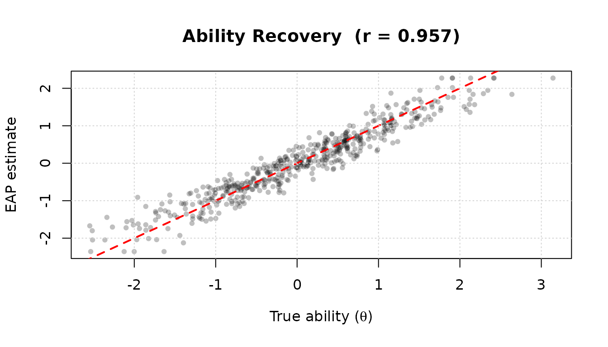

What is irtQ?
irtQ is an R package for unidimensional Item Response Theory (IRT) analyses. It supports mixed-format tests containing both dichotomous and polytomous items, and provides a unified interface for the most common psychometric tasks in educational and psychological measurement.
Why IRT? A Brief Motivation
Before using irtQ, it helps to understand why IRT is preferred over Classical Test Theory (CTT) for many measurement tasks.
Classical Test Theory (CTT) summarizes examinees by their total (or proportion) correct score and items by their observed difficulty (p-value) and point-biserial correlation. While straightforward, CTT has well-known limitations:
- Sample dependence: item statistics (difficulty, discrimination) change with the examinee group, and person scores change with the item set
- No item-level probability model: CTT does not tell us the probability that a specific person answers a specific item correctly
- Limited equating: comparing scores across different test forms requires strong assumptions
Item Response Theory (IRT) addresses these limitations by modeling the probability of each response as a function of a latent trait (ability, proficiency, or attitude) and item parameters. Key advantages are:
- Invariance: item parameters do not depend on the ability distribution of the calibration sample; person parameters do not depend on which particular items were administered
- Item-level modeling: each item has its own characteristic curve describing how response probability changes with
- Common scale: items and persons are placed on the same continuum, enabling equating, adaptive testing, and longitudinal measurement
Core Capabilities of irtQ
irtQ covers the full IRT workflow:
Primary functions:
- Estimating item parameters — fixed-form calibration, pretest
calibration using Fixed Item Parameter Calibration (FIPC) and Fixed
Ability Parameter Calibration (FAPC) approaches, and multiple-group
calibration (
est_irt(),est_mg(),est_item()) - Estimating examinee abilities — maximum likelihood (ML), weighted
likelihood (WLE), maximum a posteriori (MAP), expected a posteriori
(EAP), EAP summed scoring, and inverse test characteristic curve (TCC)
scoring (
est_score()) - Evaluating item-level model–data fit —
,
,
infit/outfit,
-
(
irtfit(),sx2_fit()) - Detecting differential item functioning (DIF) — residual-based DIF
(RDIF), generalized residual-based DIF (GRDIF), and simultaneous item
bias test modified for CAT (CATSIB) (
rdif(),grdif(),catsib()) - Computing classification accuracy and consistency indices
(
cac_lee(),cac_rud())
Utilities:
| Function | Purpose |
|---|---|
simdat() |
Simulate IRT item response data |
info() |
Item and test information functions |
traceline() |
Item and test characteristic curves |
lwrc() |
Lord–Wingersky recursion (summed-score distributions) |
gen.weight() |
Generate quadrature weights from a distribution |
covirt() |
IRT-based covariance between items |
run_flexmirt() |
Run flexMIRT directly from R |
This vignette introduces the IRT models supported by irtQ and the item metadata data structure that connects all functions. At the end, a minimal end-to-end workflow ties everything together.
Installation
Install the released version from CRAN:
install.packages("irtQ")Install the development version from GitHub:
# install.packages("devtools")
devtools::install_github("hwangQ/irtQ")Load the package:
Supported IRT Models
irtQ supports the following unidimensional IRT models for dichotomous and polytomous items.
Dichotomous Models: 1PLM, 2PLM, and 3PLM
For a binary response from an examinee with latent ability , the probability of a correct response () under the three-parameter logistic model (3PLM) is:
The four quantities in this equation each have a concrete interpretation:
— Latent ability (person parameter)
The unobserved trait being measured. The
scale is typically standardized so that
in the reference population:
is average ability,
is one standard deviation above average, and so on.
— Discrimination (item parameter)
Controls how steeply the item characteristic curve (ICC) rises. A highly
discriminating item (large
)
sharply separates examinees just below and just above the item’s
difficulty; a weakly discriminating item (small
)
produces a nearly flat ICC and provides little information about
.
In practice,
typically ranges from about 0.5 to 2.5.
— Difficulty (item parameter)
The point on the
scale where the probability of a correct response is halfway between
and 1,
i.e. .
For the 2PLM (where
),
this simplifies to the
value where
.
Items with
are easy (most examinees answer correctly); items with
are hard. Values typically range from about
to
.
— Pseudo-guessing (item parameter)
The lower asymptote of the ICC — the probability of a correct response
as
.
For a 5-option multiple-choice item with pure random guessing,
.
When
the ICC passes through the origin and the model reduces to the 2PLM or
1PLM.
— Scaling constant
is a constant that makes the logistic function closely approximate the
normal ogive used in the original IRT formulation. Using
is conventional when working with logistic models; set
to work on the purely logistic scale. All irtQ functions accept
D as an argument with default 1.702.
Special cases: 1PLM and 2PLM
| Model | Discrimination | Guessing | Free parameters |
|---|---|---|---|
| 1PLM | Fixed to 1 or constrained equal across items | only | |
| 2PLM | Freely estimated, varies across items | , | |
| 3PLM | Freely estimated, varies across items | Freely estimated | , , |
Note on 1PLM in irtQ. When
fix.a.1pl = TRUE(inest_irt()), the discrimination is fixed to the valuea.val.1pl(default 1) — this is the strict Rasch model. Whenfix.a.1pl = FALSE(the default), the common discrimination is estimated from the data but constrained to be equal across all 1PLM items. Both specifications produce only as the item-differentiating parameter, but the second is more flexible when the Rasch assumption of does not exactly hold.
Polytomous Models: GRM and GPCM
For items with ordered response categories scored (e.g., a 4-point rating scale scored 0–3), irtQ supports two models.
Graded Response Model (GRM)
The GRM (Samejima, 1969) models cumulative boundary response functions, one for each adjacent pair of categories. The cumulative probability of responding in category or higher is:
with the conventions and .
The probability of responding in exactly category is then:
Parameters:
- : a single discrimination parameter shared across all category boundaries
- : ordered threshold parameters, where is the value at which the probability of responding above category equals 0.5. The ordering constraint ensures that the response probabilities are non-negative for all .
Intuition: Think of the GRM as applying a 2PLM-like curve to each of the adjacent-category boundaries. marks the easy end of the scale (where most examinees move from category 0 to category 1), and marks the hard end (where examinees move into the top category).
Example (4-category GRM item, ):
- : Examinees with have a 50% chance of scoring 1 or higher
- : Examinees with have a 50% chance of scoring 2 or higher
- : Examinees with have a 50% chance of scoring 3 (the top category)
Generalized Partial Credit Model (GPCM)
The GPCM (Muraki, 1992) generalizes the Partial Credit Model [PCM; Masters (1982)] by allowing items to have different discrimination parameters. The probability of responding in category is:
where the convention is used so that the numerator for simplifies to .
Parameters:
- : a single discrimination parameter for the item
- : step parameters (also called threshold parameters), where governs the transition from category to category . Unlike GRM thresholds, GPCM step parameters need not be ordered.
Relationship to other models:
- Setting for all items gives the Partial Credit Model (PCM) (Masters, 1982)
- The GPCM is therefore a generalization of the PCM that allows item-varying discrimination
How to specify in irtQ: For an item with
categories, provide a vector of
step parameters as the d argument in
shape_df(). The convention
is handled internally; you do not supply
.
Summary: All Supported Models
| Model | Item type | Parameters | Notes |
|---|---|---|---|
| 1PLM | Dichotomous | fixed or equal-constrained; | |
| 2PLM | Dichotomous | ||
| 3PLM | Dichotomous | All three parameters free | |
| GRM | Polytomous | Thresholds must be ordered | |
| GPCM | Polytomous | Step params need not be ordered | |
| PCM | Polytomous | GPCM with |
Alias:
"DRM"is accepted as a model string for any dichotomous item (1PLM, 2PLM, or 3PLM) in contexts where the model is already encoded in the metadata.
Item Metadata: The Central Data Structure
Nearly every irtQ function accepts a data frame
x as its first argument. This item
metadata frame is a standardized, row-per-item table that
encodes the IRT model and parameter values for each item in a test form.
It serves as the single input format shared across all analyses —
calibration, scoring, fit evaluation, DIF detection, and more — so you
only need to build it once.
Column Structure
| Column | Type | Description |
|---|---|---|
id |
character | Unique item identifier |
cats |
integer | Number of response categories (2 for dichotomous) |
model |
character | IRT model: "1PLM", "2PLM",
"3PLM", "GRM", "GPCM"
|
par.1 |
numeric | Discrimination parameter () |
par.2 |
numeric | Difficulty () for dichotomous; first threshold () for polytomous |
par.3 |
numeric | Guessing
()
for 3PLM; second threshold
()
for polytomous; NA otherwise |
par.4, … |
numeric | Additional thresholds for polytomous items; NA for
dichotomous |
The number of par.* columns grows with the maximum
number of categories across items. For example, a test containing a GRM
item with 5 categories will have columns par.1 through
par.5, with NA filling unused slots for
dichotomous items.
A Concrete Example
# 3 dichotomous items (2PLM) + 2 polytomous items (GRM, 4 categories)
meta_demo <- shape_df(
par.drm = list(
a = c(1.2, 0.9, 1.5),
b = c(-0.5, 0.0, 1.0),
g = c(NA, NA, NA) # NA: no guessing for 2PLM
),
par.prm = list(
a = c(1.8, 1.3),
d = list(
c(-1.2, 0.0, 1.2), # 3 thresholds for item 4 (4 categories)
c(-0.8, 0.3, 1.5) # 3 thresholds for item 5 (4 categories)
)
),
item.id = paste0("I", 1:5),
cats = c(2, 2, 2, 4, 4),
model = c("2PLM", "2PLM", "2PLM", "GRM", "GRM")
)
meta_demo
#> id cats model par.1 par.2 par.3 par.4
#> 1 I1 2 2PLM 1.2 -0.5 NA NA
#> 2 I2 2 2PLM 0.9 0.0 NA NA
#> 3 I3 2 2PLM 1.5 1.0 NA NA
#> 4 I4 4 GRM 1.8 -1.2 0.0 1.2
#> 5 I5 4 GRM 1.3 -0.8 0.3 1.5Reading across the columns:
- Items I1–I3 are 2PLM:
par.1= ,par.2= ,par.3=NA(no guessing),par.4=NA(no third threshold) - Items I4–I5 are GRM with 4 categories:
par.1= ,par.2–par.4=
Creating Item Metadata with shape_df()
shape_df() is the primary tool for building item
metadata from scratch. It takes parameter values as named lists and
returns a correctly formatted metadata data frame.
Example 1: Six dichotomous items (1PLM, 2PLM, 3PLM mixed)
meta_ex1 <- shape_df(
par.drm = list(
a = c(1.0, 1.0, 0.9, 1.2, 0.8, 2.1), # discrimination
b = c(0.2, 2.3, -0.4, -2.5, 0.9, 1.2), # difficulty
g = c(NA, NA, NA, NA, 0.2, 0.1) # guessing: NA for 1PLM/2PLM
),
item.id = paste0("ITEM", 1:6),
cats = 2,
model = c("1PLM", "1PLM", "2PLM", "2PLM", "3PLM", "3PLM")
)
meta_ex1
#> id cats model par.1 par.2 par.3
#> 1 ITEM1 2 1PLM 1.0 0.2 NA
#> 2 ITEM2 2 1PLM 1.0 2.3 NA
#> 3 ITEM3 2 2PLM 0.9 -0.4 NA
#> 4 ITEM4 2 2PLM 1.2 -2.5 NA
#> 5 ITEM5 2 3PLM 0.8 0.9 0.2
#> 6 ITEM6 2 3PLM 2.1 1.2 0.1Key points:
-
par.drmtakes a named list with three vectors:a(discrimination),b(difficulty), andg(guessing). Setg = NAfor 1PLM and 2PLM items. - Items 1 and 2 are 1PLM: their
avalues are provided inpar.drmbut will be handled according to thefix.a.1plargument in estimation functions. Thepar.3column in the output isNAbecause there is no guessing for 1PLM items. - Items 5 and 6 are 3PLM: their guessing parameters are
0.2and0.1respectively.
Example 2: Mixed-format test (dichotomous + polytomous)
meta_ex2 <- shape_df(
par.drm = list(
a = c(0.8, 2.1),
b = c(0.9, 1.2),
g = c(0.2, 0.1)
),
par.prm = list(
a = c(1.9, 1.3, 0.7),
d = list(
c(-1.20, -0.52, 0.25), # GRM item: 4 categories → 3 thresholds
c(-2.20, -1.50, -0.55), # GPCM item: 4 categories → 3 step params
c(-0.92, -0.43, 0.49, 1.11) # GPCM item: 5 categories → 4 step params
)
),
item.id = paste0("ITEM", 1:5),
cats = c(2, 2, 4, 4, 5),
model = c("3PLM", "3PLM", "GRM", "GPCM", "GPCM")
)
meta_ex2
#> id cats model par.1 par.2 par.3 par.4 par.5
#> 1 ITEM1 2 3PLM 0.8 0.90 0.20 NA NA
#> 2 ITEM2 2 3PLM 2.1 1.20 0.10 NA NA
#> 3 ITEM3 4 GRM 1.9 -1.20 -0.52 0.25 NA
#> 4 ITEM4 4 GPCM 1.3 -2.20 -1.50 -0.55 NA
#> 5 ITEM5 5 GPCM 0.7 -0.92 -0.43 0.49 1.11Key points:
-
par.prmtakes a named list witha(discrimination for polytomous items) andd(a list of threshold/step parameter vectors, one per polytomous item). - Each vector in
dmust have length where iscatsfor that item: 4-category items need 3 values; 5-category items need 4 values. - For a GRM item, the values in
dare thresholds , which must be in increasing order. - For a GPCM item, the values in
dare step parameters , which need not be ordered. - The
dvectors for GRM and GPCM items can be mixed within the samepar.prmlist — themodelargument determines which model applies to each item.
Example 3: Uniform model, auto-assigned IDs
When all items share the same model, a single model string is
recycled. If item.id is omitted, IDs are auto-assigned as
V1, V2, …
meta_ex3 <- shape_df(
par.drm = list(
a = c(1.0, 1.0, 0.9, 1.2, 0.8, 2.1),
b = c(0.2, 2.3, -0.4, -2.5, 0.9, 1.2),
g = c(0.1, 0.3, 0.1, 0.2, 0.2, 0.1)
),
cats = 2,
model = "3PLM" # recycled for all six items
)
meta_ex3
#> id cats model par.1 par.2 par.3
#> 1 V1 2 3PLM 1.0 0.2 0.1
#> 2 V2 2 3PLM 1.0 2.3 0.3
#> 3 V3 2 3PLM 0.9 -0.4 0.1
#> 4 V4 2 3PLM 1.2 -2.5 0.2
#> 5 V5 2 3PLM 0.8 0.9 0.2
#> 6 V6 2 3PLM 2.1 1.2 0.1Example 4: Default parameters (default.par = TRUE)
Set default.par = TRUE to create a metadata frame with
placeholder parameters without specifying values explicitly. This is
useful when you want to calibrate items from scratch and only need the
structure, or as a starting point for editing. Default values are
,
,
for 3PLM and NA for 1PLM/2PLM; polytomous thresholds
default to all zeros.
shape_df() Argument Summary
| Argument | Description |
|---|---|
par.drm |
Named list with a, b, g
vectors for dichotomous items |
par.prm |
Named list with a and d (list of threshold
vectors) for polytomous items |
item.id |
Character vector of item IDs; auto-assigned as V1,
V2, … if omitted |
cats |
Integer vector of category counts per item (scalar if all equal) |
model |
Character vector of model strings (scalar if all equal) |
default.par |
If TRUE, fill parameters with built-in defaults
(default FALSE) |
Importing Item Metadata from External IRT Software
The bring.*() family of functions converts output files
from external IRT programs into irtQ’s item metadata
format. This makes it easy to use parameters calibrated in another
program as the starting point for downstream irtQ
analyses.
Each function returns a list; the $full_df component
contains the complete standardized metadata data frame.
Importing from flexMIRT
# Locate the sample flexMIRT -prm.txt file bundled with irtQ
flex_file <- system.file("extdata", "flexmirt_sample-prm.txt", package = "irtQ")
# Import: returns a list keyed by group (e.g., Group1, Group2, ...)
meta_flex <- bring.flexmirt(file = flex_file, type = "par")$Group1$full_df
meta_flex
#> id cats model par.1 par.2 par.3 par.4 par.5
#> 1 CMC1 2 3PLM 0.7627842 1.46195307 0.261505353 NA NA
#> 2 CMC2 2 3PLM 1.9212842 -1.04997761 0.175294361 NA NA
#> 3 CMC3 2 3PLM 0.9266599 0.39475508 0.099746565 NA NA
#> 4 CMC4 2 3PLM 1.0526419 -0.40704222 0.201193373 NA NA
#> 5 CMC5 2 3PLM 0.8663350 -0.12481696 0.160420403 NA NA
#> 6 CMC6 2 3PLM 1.6956204 0.62610659 0.072168572 NA NA
#> 7 CMC7 2 3PLM 0.9061455 1.01573864 0.119458135 NA NA
#> 8 CMC8 2 3PLM 0.8442812 0.80047702 0.114479251 NA NA
#> 9 CMC9 2 3PLM 0.8541021 0.85236906 0.255248657 NA NA
#> 10 CMC10 2 3PLM 1.5320152 0.09036640 0.135385451 NA NA
#> 11 CMC11 2 3PLM 1.0018535 -0.46145320 0.132401405 NA NA
#> 12 CMC12 2 3PLM 0.8784359 1.18144944 0.087687982 NA NA
#> 13 CMC13 2 3PLM 1.4566944 1.40553715 0.181275480 NA NA
#> 14 CMC14 2 3PLM 1.5142828 0.18435004 0.248064790 NA NA
#> 15 CMC15 2 3PLM 1.2965707 -0.22914423 0.111920040 NA NA
#> 16 CMC16 2 3PLM 2.0469491 -0.08536470 0.050890225 NA NA
#> 17 CMC17 2 3PLM 1.3978190 -0.13421645 0.178526460 NA NA
#> 18 CMC18 2 3PLM 1.6957073 1.24709400 0.273106846 NA NA
#> 19 CMC19 2 3PLM 2.3117795 -1.01102523 0.179638721 NA NA
#> 20 CMC20 2 3PLM 1.4489340 -1.65436976 0.190693574 NA NA
#> 21 CMC21 2 3PLM 1.6281382 -1.19437963 0.121929251 NA NA
#> 22 CMC22 2 3PLM 0.8320715 -0.67723050 0.197432042 NA NA
#> 23 CMC23 2 3PLM 0.9768588 -0.25632988 0.130014303 NA NA
#> 24 CMC24 2 3PLM 1.1418671 1.67963811 0.254011205 NA NA
#> 25 CMC25 2 3PLM 0.7944843 -1.39426607 0.264555718 NA NA
#> 26 CMC26 2 3PLM 1.0923706 -1.84806805 0.166491117 NA NA
#> 27 CMC27 2 3PLM 1.1730201 0.07444365 0.131922668 NA NA
#> 28 CMC28 2 3PLM 2.1546851 -0.08787145 0.208148649 NA NA
#> 29 CMC29 2 3PLM 1.2810740 -1.38040199 0.201295671 NA NA
#> 30 CMC30 2 3PLM 1.3505976 0.82351324 0.323145357 NA NA
#> 31 CMC31 2 3PLM 0.8203985 0.70908638 0.082856907 NA NA
#> 32 CMC32 2 3PLM 1.5235060 -0.88999000 0.257420730 NA NA
#> 33 CMC33 2 3PLM 1.2711786 -1.31320312 0.186172388 NA NA
#> 34 CMC34 2 3PLM 1.3107828 0.18690381 0.158109796 NA NA
#> 35 CMC35 2 3PLM 1.4665995 -0.13801287 0.226328899 NA NA
#> 36 CMC36 2 3PLM 0.8918806 1.09548554 0.126283949 NA NA
#> 37 CMC37 2 3PLM 1.7287653 -0.40939097 0.104544594 NA NA
#> 38 CMC38 2 3PLM 0.7327085 -0.37360246 0.218883035 NA NA
#> 39 CFR1 5 GRM 1.9134815 -1.86983653 -1.238979525 -0.7140496 -0.2301269
#> 40 CFR2 5 GRM 1.2784658 -0.72406919 -0.068767894 0.5689640 1.0726913
#> 41 AMC1 2 3PLM 1.4655489 0.64088029 0.225388960 NA NA
#> 42 AMC2 2 3PLM 1.7609502 -1.52832130 0.158898368 NA NA
#> 43 AMC3 2 3PLM 1.4430127 0.54078083 0.138825943 NA NA
#> 44 AMC4 2 3PLM 0.9784240 -0.36582964 0.126958991 NA NA
#> 45 AMC5 2 3PLM 0.9915383 2.37079859 0.164822203 NA NA
#> 46 AMC6 2 3PLM 2.2732723 1.62427761 0.178409401 NA NA
#> 47 AMC7 2 3PLM 1.2256893 -0.07172021 0.131317231 NA NA
#> 48 AMC8 2 3PLM 1.6399644 0.16526401 0.182665802 NA NA
#> 49 AMC9 2 3PLM 1.2090633 0.23974948 0.081366545 NA NA
#> 50 AMC10 2 3PLM 1.3201851 1.33993665 0.079323850 NA NA
#> 51 AMC11 2 3PLM 1.7372043 -0.99805101 0.246773029 NA NA
#> 52 AMC12 2 3PLM 0.9746876 -0.72824708 0.223540392 NA NA
#> 53 AFR1 5 GRM 1.1378595 -0.37401164 0.215487852 0.8485578 1.3826066
#> 54 AFR2 5 GRM 1.2333756 -2.07872217 -1.347637330 -0.7054699 -0.1163185
#> 55 AFR3 5 GRM 0.8762246 -0.75520683 -0.005929073 0.6650100 1.2474287bring.flexmirt() returns a nested list
keyed by group name. Use $Group1$full_df,
$Group2$full_df, etc. to access each group’s metadata.
Importing from PARSCALE
# Locate the sample PARSCALE .PAR file bundled with irtQ
pscale_file <- system.file("extdata", "parscale_sample.PAR", package = "irtQ")
# Import item parameters
meta_pscale <- bring.parscale(file = pscale_file, type = "par")$full_df
meta_pscale
#> id cats model par.1 par.2 par.3 par.4 par.5
#> 1 0001 2 DRM 0.78668 1.45392 0.26424 NA NA
#> 2 0002 2 DRM 1.95256 -1.03590 0.16790 NA NA
#> 3 0003 2 DRM 0.92423 0.36744 0.08911 NA NA
#> 4 0004 2 DRM 1.06017 -0.41665 0.19257 NA NA
#> 5 0005 2 DRM 0.86593 -0.15680 0.14700 NA NA
#> 6 0006 2 DRM 1.70781 0.62067 0.06983 NA NA
#> 7 0007 2 DRM 0.91006 0.99884 0.11532 NA NA
#> 8 0008 2 DRM 0.84174 0.77277 0.10594 NA NA
#> 9 0009 2 DRM 0.86645 0.84402 0.25407 NA NA
#> 10 0010 2 DRM 1.54383 0.08762 0.13141 NA NA
#> 11 0011 2 DRM 1.00673 -0.47776 0.12047 NA NA
#> 12 0012 2 DRM 0.87475 1.15744 0.08077 NA NA
#> 13 0013 2 DRM 1.48901 1.39467 0.18195 NA NA
#> 14 0014 2 DRM 1.53152 0.18416 0.24621 NA NA
#> 15 0015 2 DRM 1.30079 -0.24027 0.10225 NA NA
#> 16 0016 2 DRM 2.06064 -0.08604 0.04616 NA NA
#> 17 0017 2 DRM 1.41035 -0.13591 0.17396 NA NA
#> 18 0018 2 DRM 1.73702 1.23955 0.27421 NA NA
#> 19 0019 2 DRM 2.35588 -0.99336 0.17489 NA NA
#> 20 0020 2 DRM 1.47074 -1.64613 0.17122 NA NA
#> 21 0021 2 DRM 1.65023 -1.18579 0.10906 NA NA
#> 22 0022 2 DRM 0.83234 -0.71780 0.17873 NA NA
#> 23 0023 2 DRM 0.97745 -0.28252 0.11614 NA NA
#> 24 0024 2 DRM 1.19351 1.66222 0.25751 NA NA
#> 25 0025 2 DRM 0.80015 -1.42399 0.24565 NA NA
#> 26 0026 2 DRM 1.10754 -1.84767 0.14416 NA NA
#> 27 0027 2 DRM 1.17525 0.06034 0.12368 NA NA
#> 28 0028 2 DRM 2.17855 -0.08451 0.20623 NA NA
#> 29 0029 2 DRM 1.29244 -1.39057 0.17961 NA NA
#> 30 0030 2 DRM 1.37376 0.82118 0.32351 NA NA
#> 31 0031 2 DRM 0.81518 0.67339 0.07125 NA NA
#> 32 0032 2 DRM 1.54708 -0.87791 0.25249 NA NA
#> 33 0033 2 DRM 1.28305 -1.32022 0.16690 NA NA
#> 34 0034 2 DRM 1.31798 0.17924 0.15299 NA NA
#> 35 0035 2 DRM 1.48301 -0.13656 0.22323 NA NA
#> 36 0036 2 DRM 0.89426 1.07673 0.12151 NA NA
#> 37 0037 2 DRM 1.74214 -0.40933 0.09754 NA NA
#> 38 0038 2 DRM 0.73472 -0.40711 0.20611 NA NA
#> 39 0039 5 GRM 1.94931 -1.82855 -1.21040 -0.69548 -0.22021
#> 40 0040 5 GRM 1.30020 -0.70553 -0.06094 0.56671 1.06264
#> 41 0041 2 DRM 1.48353 0.63767 0.22449 NA NA
#> 42 0042 2 DRM 1.79481 -1.50864 0.14541 NA NA
#> 43 0043 2 DRM 1.45567 0.53570 0.13648 NA NA
#> 44 0044 2 DRM 0.98254 -0.38343 0.11552 NA NA
#> 45 0045 2 DRM 1.05231 2.31660 0.16867 NA NA
#> 46 0046 2 DRM 2.41144 1.60547 0.18062 NA NA
#> 47 0047 2 DRM 1.23217 -0.08089 0.12396 NA NA
#> 48 0048 2 DRM 1.65413 0.16364 0.17983 NA NA
#> 49 0049 2 DRM 1.21099 0.22634 0.07378 NA NA
#> 50 0050 2 DRM 1.33178 1.32871 0.07789 NA NA
#> 51 0051 2 DRM 1.76740 -0.98230 0.24200 NA NA
#> 52 0052 2 DRM 0.97768 -0.75322 0.20821 NA NA
#> 53 0053 5 GRM 1.15715 -0.36099 0.21902 0.84214 1.36791
#> 54 0054 5 GRM 1.25620 -2.03425 -1.31648 -0.68590 -0.10716
#> 55 0055 5 GRM 0.89213 -0.73461 0.00167 0.66112 1.23362Importing from BILOG-MG
# Import from a BILOG-MG .PAR output file (not run — replace with your path)
meta_bilog <- bring.bilog(file = "output/mytest.PAR", type = "par")$full_dfImporting from the mirt package
# Fit a model with mirt (not run)
# mirt_mod <- mirt::mirt(data = my_data, model = 1, itemtype = "2PL")
# Convert to irtQ metadata
# meta_mirt <- bring.mirt(x = mirt_mod)$full_dfCommon Arguments for bring.*() Functions
All bring.*() functions share two main arguments:
| Argument | Description |
|---|---|
file |
Path to the external software output file |
type |
"par" for item parameter estimates; "sco"
for ability score estimates |
In practice, replace system.file(...) with the actual
path to your file:
meta <- bring.flexmirt(file = "output/my_calibration-prm.txt",
type = "par")$Group1$full_dfReading Item Metadata from a CSV File
You can also prepare item metadata in a spreadsheet and read it into R as a CSV file, as long as the column structure matches the irtQ specification.
# Read item metadata from a CSV file (not run — replace with your path)
meta_csv <- read.csv("my_item_parameters.csv", stringsAsFactors = FALSE)
# Verify the structure
str(meta_csv)
head(meta_csv)Ensure that:
- Column names are exactly
id,cats,model,par.1,par.2,par.3, … -
idis character,catsis integer,modelis character,par.*are numeric - Missing threshold or guessing parameters are coded as
NA - GRM threshold columns (
par.2,par.3, …) are in increasing order within each row
A Complete End-to-End Workflow
This vignette has focused on item metadata — the central data structure that connects all irtQ functions. To show how metadata fits into the broader analysis pipeline, the example below walks through a minimal end-to-end workflow: define item metadata → simulate responses → estimate item parameters → estimate abilities → check recovery. Each step beyond metadata creation is covered in depth in its own dedicated vignette (see What’s Next? at the end of this page).
The following example walks through the core irtQ workflow from start to finish: define item metadata → simulate responses → estimate item parameters → estimate abilities → check recovery.
set.seed(2026)
# ---- Step 1: Define item metadata (20-item mixed test) ----
# 15 dichotomous 2PLM items + 5 polytomous GRM items (4 categories)
meta_wf <- shape_df(
par.drm = list(
a = c(0.8, 1.2, 1.5, 0.9, 1.1, 1.3, 0.7, 1.0, 1.4, 0.85,
1.1, 0.9, 1.2, 1.0, 1.3),
b = c(-1.5, -1.0, -0.5, -0.2, 0.0, 0.2, 0.5, 0.8, 1.0, 1.5,
-1.2, -0.8, -0.3, 0.1, 0.4),
g = rep(NA, 15)
),
par.prm = list(
a = c(1.4, 1.1, 0.9, 1.2, 1.0),
d = list(
c(-1.5, -0.2, 0.9),
c(-1.2, 0.1, 1.2),
c(-0.9, 0.4, 1.5),
c(-1.1, -0.1, 1.0),
c(-1.3, 0.3, 1.3)
)
),
item.id = c(paste0("D", 1:15), paste0("P", 1:5)),
cats = c(rep(2, 15), rep(4, 5)),
model = c(rep("2PLM", 15), rep("GRM", 5))
)
# ---- Step 2: Simulate response data (500 examinees, N(0,1)) ----
theta_true <- rnorm(500, mean = 0, sd = 1)
resp <- simdat(x = meta_wf, theta = theta_true, D = 1.702)
cat("Response matrix dimensions:", dim(resp), "\n") # 500 examinees × 20 items
#> Response matrix dimensions: 500 20
# ---- Step 3: Estimate item parameters with est_irt() ----
mod <- est_irt(
data = resp,
D = 1.702,
model = c(rep("2PLM", 15), rep("GRM", 5)),
cats = c(rep(2, 15), rep(4, 5)),
item.id = c(paste0("D", 1:15), paste0("P", 1:5)),
EmpHist = FALSE,
Etol = 0.001,
MaxE = 300,
se = TRUE,
verbose = FALSE
)
# Summarize calibration results
summary(mod)
#>
#> Call:
#> est_irt(data = resp, D = 1.702, model = c(rep("2PLM", 15), rep("GRM",
#> 5)), cats = c(rep(2, 15), rep(4, 5)), item.id = c(paste0("D",
#> 1:15), paste0("P", 1:5)), EmpHist = FALSE, Etol = 0.001,
#> MaxE = 300, se = TRUE, verbose = FALSE)
#>
#> Summary of the Data
#> Number of Items: 20
#> Number of Cases: 500
#>
#> Summary of Estimation Process
#> Maximum number of EM cycles: 300
#> Convergence criterion of E-step: 0.001
#> Number of rectangular quadrature points: 49
#> Minimum & Maximum quadrature points: -6, 6
#> Number of free parameters: 50
#> Number of fixed items: 0
#> Number of E-step cycles completed: 14
#> Maximum parameter change: 0.000805268
#>
#> Processing time (in seconds)
#> EM algorithm: 0.49
#> Standard error computation: 0.02
#> Total computation: 0.55
#>
#> Convergence and Stability of Solution
#> First-order test: Convergence criteria are satisfied.
#> Second-order test: Solution is a possible local maximum.
#> Computation of variance-covariance matrix:
#> Variance-covariance matrix of item parameter estimates is obtainable.
#>
#> Summary of Estimation Results
#> -2loglikelihood: 12453.76
#> Akaike Information Criterion (AIC): 12553.76
#> Bayesian Information Criterion (BIC): 12764.5
#> Item Parameters:
#> id cats model par.1 se.1 par.2 se.2 par.3 se.3 par.4 se.4
#> 1 D1 2 2PLM 1.01 0.12 -1.38 0.13 NA NA NA NA
#> 2 D2 2 2PLM 1.33 0.17 -1.02 0.09 NA NA NA NA
#> 3 D3 2 2PLM 1.64 0.19 -0.37 0.06 NA NA NA NA
#> 4 D4 2 2PLM 0.95 0.10 -0.19 0.08 NA NA NA NA
#> 5 D5 2 2PLM 1.10 0.12 0.05 0.07 NA NA NA NA
#> 6 D6 2 2PLM 1.60 0.17 0.05 0.06 NA NA NA NA
#> 7 D7 2 2PLM 0.64 0.08 0.49 0.11 NA NA NA NA
#> 8 D8 2 2PLM 1.14 0.14 0.72 0.08 NA NA NA NA
#> 9 D9 2 2PLM 1.69 0.23 0.83 0.07 NA NA NA NA
#> 10 D10 2 2PLM 0.85 0.12 1.43 0.15 NA NA NA NA
#> 11 D11 2 2PLM 1.12 0.16 -1.24 0.12 NA NA NA NA
#> 12 D12 2 2PLM 0.87 0.10 -0.82 0.10 NA NA NA NA
#> 13 D13 2 2PLM 1.46 0.16 -0.30 0.06 NA NA NA NA
#> 14 D14 2 2PLM 1.00 0.11 0.14 0.07 NA NA NA NA
#> 15 D15 2 2PLM 1.32 0.14 0.40 0.07 NA NA NA NA
#> 16 P1 4 GRM 1.44 0.20 -1.39 0.18 -0.20 0.10 0.83 0.13
#> 17 P2 4 GRM 1.33 0.19 -1.07 0.15 0.09 0.10 1.00 0.14
#> 18 P3 4 GRM 0.93 0.15 -0.93 0.18 0.43 0.14 1.61 0.25
#> 19 P4 4 GRM 1.23 0.17 -1.04 0.16 -0.01 0.11 1.02 0.15
#> 20 P5 4 GRM 0.92 0.14 -1.48 0.25 0.24 0.13 1.28 0.20
#> Group Parameters:
#> mu sigma2 sigma
#> estimates 0 1 1
#> se NA NA NA
# Extract estimated item parameters
est_par <- getirt(mod, what = "par.est")
head(est_par)
#> id cats model par.1 par.2 par.3 par.4
#> 1 D1 2 2PLM 1.0123517 -1.37784253 NA NA
#> 2 D2 2 2PLM 1.3299712 -1.02270411 NA NA
#> 3 D3 2 2PLM 1.6403799 -0.37121257 NA NA
#> 4 D4 2 2PLM 0.9498437 -0.18544536 NA NA
#> 5 D5 2 2PLM 1.1028978 0.04530653 NA NA
#> 6 D6 2 2PLM 1.5957104 0.04913832 NA NA
# ---- Step 4: Estimate examinee abilities with EAP ----
scores <- est_score(
x = est_par, # use calibrated parameters
data = resp,
D = 1.702,
method = "EAP"
)
head(scores$est.theta) # EAP point estimates
#> [1] 0.34463246 -0.79829815 0.01201060 0.02605644 -0.65820040 -1.80059559
head(scores$se.theta) # posterior standard deviations
#> [1] 0.2593798 0.2654566 0.2129144 0.2252718 0.2551288 0.3670970
# ---- Step 5: Evaluate ability recovery ----
r <- cor(scores$est.theta, theta_true)
plot(theta_true, scores$est.theta,
xlab = expression("True ability (" * theta * ")"),
ylab = "EAP estimate",
main = paste0("Ability Recovery (r = ", round(r, 3), ")"),
pch = 16, col = rgb(0, 0, 0, 0.25), cex = 0.8)
abline(0, 1, col = "red", lwd = 2, lty = 2)
grid()
High correlation () between EAP estimates and the true simulated abilities confirms that the item calibration and scoring steps are working correctly.
What’s Next?
Now that you understand irtQ’s item metadata structure and the supported IRT models, you are ready to explore each analysis in depth:
| Topic | Vignette | Key Functions |
|---|---|---|
| Item parameter estimation | vignette("item-parameter-estimation") |
est_irt(), est_mg(),
est_item()
|
| Ability estimation | vignette("ability-estimation") |
est_score() |
| Model–data fit | vignette("model-fit-evaluation") |
irtfit(), sx2_fit()
|
| DIF detection | vignette("dif-detection") |
rdif(), grdif(),
catsib()
|
| Classification accuracy | vignette("classification-analysis") |
cac_lee(), cac_rud()
|
| Utilities | vignette("utilities") |
simdat(), drm(), prm(),
info(), traceline(), lwrc(),
gen.weight(), covirt()
|
| MST panel evaluation | vignette("mst-panel-evaluation") |
reval_mst() |